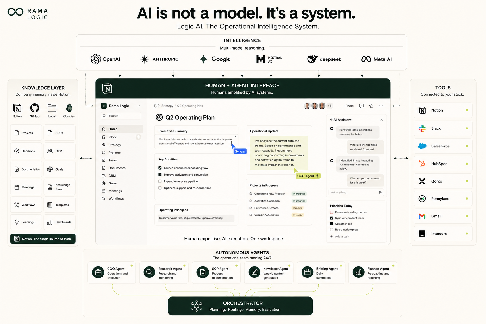

[ F/AI × Notion ]
From company context to AI that gets work done.
Sylvain Ramaradjou · Rama Logic · 3 Nov 2026
[ the idea in one line ]
Notion is the context of your business.
[ the problem ]
Every AI you use starts from zero about your company.
[ the cost ]
So you explain your company again. And again. And again.
We are a B2B startup that…
We are a B2B startup that…
We are a B2B startup that…
[ in the chat ]
What did you have to re-explain to an AI this week?
[ the shift ]
Models stopped being the bottleneck. Context did not.
[ the habit ]
Write your company down once. Let every AI read it.
[ the culture angle ]
Your written culture becomes your AI’s context.
[ the architecture ]
Here is the whole system on one page.

[ proof · rama logic ]
I run my own company this way.
# Dernière copie : 2026-10-26 04:00 UTC, par agents/scripts/sync_claude_md.py (chaque nuit)
## Qui est Sylvain Ramaradjou
## Comportement obligatoire
## Règles opérationnelles critiques
## Sécurité
## Stack technique
## Agents actifs (crons locaux VPS)
[ every night ]
Every night, my Notion is copied into my AI’s memory.
3
notion pages
+ a map of 41 databases
every night
232
lines of instructions
61
robots
[ in numbers ]
53 databases. 61 robots. One source of truth.
[ the result ]
My robots never ask me who my customers are.
[ day one ]
Five pages. That’s all you need on day one.
- 01 · mission
- 02 · customers
- 03 · rituals
- 04 · decisions
- 05 · vocabulary
- + read me first
[ 01 · mission ]
Why you exist, and what you refuse to do.
[ 02 · customers ]
Who you serve, in their own words.
[ 03 · rituals ]
How your team meets, decides and ships.
[ 04 · decisions ]
What you decided, and why.
[ 05 · vocabulary ]
The words you use, and the ones you ban.
[ + read me first ]
One page that tells any human or AI where to start.
[ live ]
Let’s build it.
[ two workers ]
Same context. Two different workers.
[ notion agent ]
Lives in your workspace. Acts on your databases. Runs on its own.
[ claude ]
Thinks deeper. Works across your tools. Sits next to you.
[ use case 01 · notion agent ]
A new hire asks how we decide. The workspace answers.
Who decides: Dan for product and ops, Nadia for pricing, go-to-market and hiring. A decision goes Proposed, then Active. Reversed rows are never deleted. Not written down yet: laptop, tool access, onboarding buddy. Ask Nadia or Dan.
[ use case 02 · notion agent ]
Three customer calls become two proposed decisions.
Proposed · Post failure alerts to the customer's Slack or Teams channel the moment a sync fails. Source: 3 of 3 customer notes. Changes the Active decision "Monday email digest".
Proposed · Route each alert to the owner of the table. Source: 3 of 3 customer notes.
[ use case 03 · claude ]
October’s investor update, written from your metrics.
Highlights: MRR 16,200, up 7.2% on September. Pipeline 98,000, up 26%.
Lowlights: customers flat at 9. Burn up for the fifth month running: 54,100.
Cash and runway are not in Metrics, so they are not in this update.
[ use case 04 · claude ]
A cold email that sounds like you, with zero banned words.
When a sync fails at a logistics company, operations often hears last. One customer put it this way: "It failed on the Tuesday. We found out on the Friday, from our own customer." [...] When a stock number moves overnight, who finds out first today?
[ use case 05 · notion agent ]
Every Monday, last week’s decisions land in one digest.
Decisions digest, week of 2 Nov 2026
Proposed: alerts in Slack or Teams · alerts to the table owner
Active: none new · Reversed: none
[ use case 06 · claude ]
Before you launch a free plan, Claude argues against it.
Against: it collides with three Active decisions (free 30-day pilots with a named owner, selling to the head of operations, one flat price per source). Burn is up five months running.
For: self-serve worked before.
Recommendation: no free plan. The free pilot stays the way in.
[ use case 07 · claude ]
Your landing page, checked against your own vocabulary.
4 banned words caught: AI-powered, real-time, seamless, run. "Pay per run" contradicts the Active pricing decision.
Rewrite: Vela AI checks every table after each sync and emails the owner the moment a check fails. Stop finding out on Friday what broke on Tuesday.
[ in the chat ]
Which one would you hand to an agent first? Type 1 to 7.
- 1A new hire asks how we decide. The workspace answers.notion agent
- 2Three customer calls become two proposed decisions.notion agent
- 3October’s investor update, written from your metrics.claude
- 4A cold email that sounds like you, with zero banned words.claude
- 5Every Monday, last week’s decisions land in one digest.notion agent
- 6Before you launch a free plan, Claude argues against it.claude
- 7Your landing page, checked against your own vocabulary.claude
[ rule of thumb ]
Notion Agent for the routine. Claude for the thinking.
[ this week ]
Write your Read me first page. Then ask your AI one question.
[ take it with you ]
The starter template and what I learn next, in my newsletter.
[ q&a ]
Your questions.
[ thank you ]
Thank you.
Sylvain Ramaradjou · Rama Logic · ramalogic.com